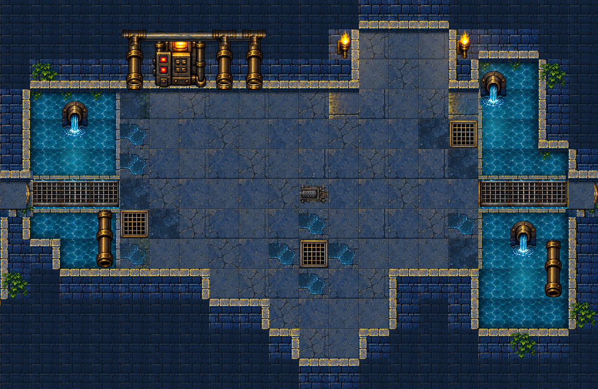
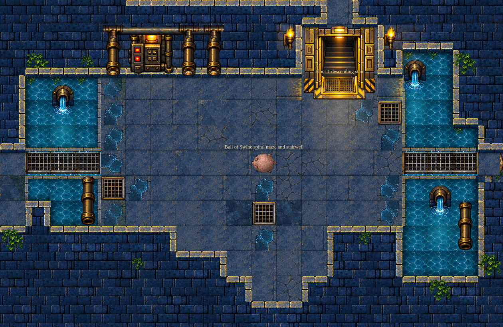
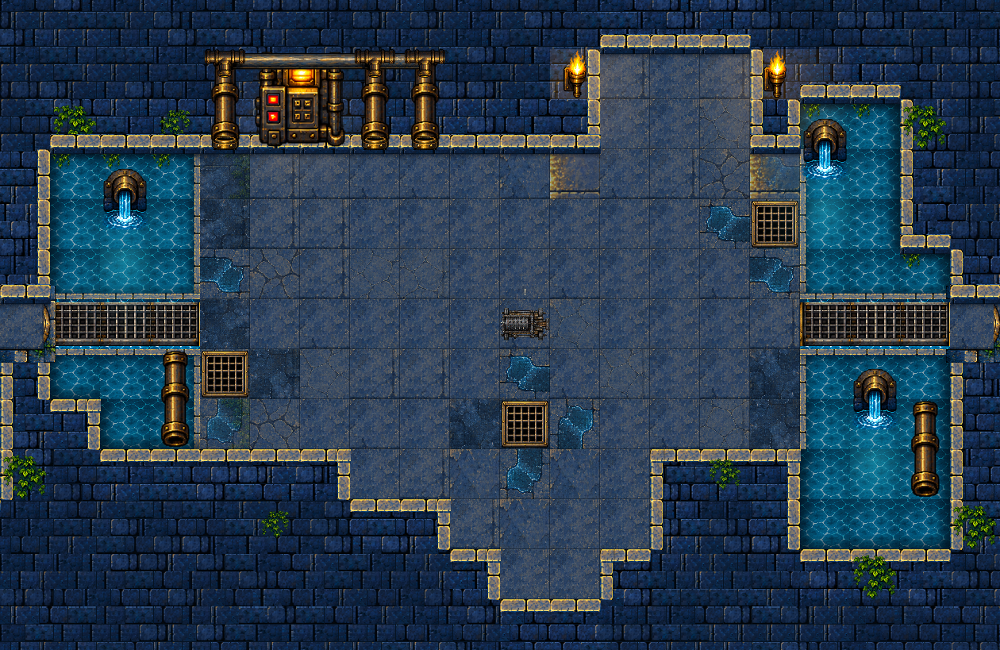

Actual published WASM state. Browser response override changes room camera framing and renderer frame timestamp only (1000 ms). External controls/toast/battle banner hidden for environment crop. No state, geometry, assets, or draw calls injected. Initial player state retained for equal comparisons.


